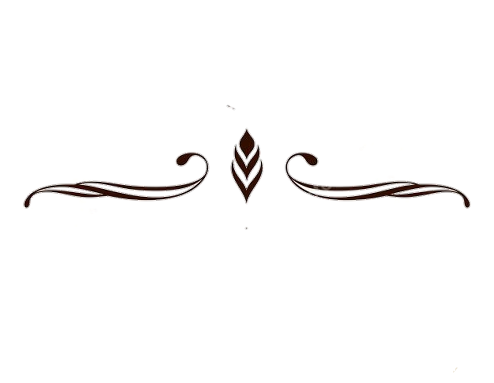

![Зображення Пилип Орлик](
ctJBv1rqPjcAbn/SjYsIK2/HLKugX3PT/AKqVK4Um3Ty/CkB778thzVquVii19utuhq88CU/ZdFp4zG32nXhpUbxIt+v8KpAXLcHfL01eezESH+zmswkTLLHlzS21J4jlz5g2OA7tfpe4mi10GSyRqsxK/I1LRFY9QNRHJ3kOv0gm5nybvQP6UVxjTfaVdAjH7kqPr2qA4VqT9kKMrK/Dtbu+391/4NQyzEfHdElxCW5dhvZQ16psTd9xIv6YIAwyflRqsusnvkw8OOV/S1VDgcueo1spS+X3eWeKogG9Ko51P5Ftf000vn/DND0U/dXZzirdMk8C9R+fWgtfqCsAYhe8mkPcp9XQfzP7NBwzZERxZCQr3a5PyYmuayf7TqSi/wBxo17hD8cpG/7lrXglpx1SsHaKFdLEkUe4Xz+JqJ073tahmQuAiDenp9RHwqJNbqnUw94LjPmx/n+FTKLkyucowjdkiEGLSyHGNVMjv9NVDtR27j0Zk0nCzHOWh7t5Mco4nvv/AAqrdoe1M/FXk0uiM0GjkmLCPPFpfx9h8qXwvs7HBA+p1nfd4/LByfdO9/f8jVtOhGGZ79jnzquWz/oA0XAtZxZxqJIZ5s2xyl1IjXH8/KrvwXg0+gULHwrRGT1PqNeGzrkKGO0cel1dnUMn/wBx5fwsLU8TItlk0s3xFW4kccflvtRVJSljCXnZgxSj4v6JnTLP3kaTaLh0UL3714ZcmTb8KG16CQzRxi6nWxQALyr03tQTRsWFoIWY2Yr/AGk0nlTyd6wiRotNEEnE+MTlmoF3892eZWO275T4FmKiMfst7VT5Rv7irD2qfvNRIbY82JVfRUFKnn1q+itMEvkS1MyY021vny0gA/lS2FvkPEaTY/1pwsI9m88uvnSRXq9Wop6jy1pHZ5QW4ZcA/wDpG8q5Xqnr8vnYKJcD5f78qrCqAONrYWNri1wdq5XqhXXzqhyAdZ/d/wD8R/pVV4N1m/8A2NXq9XqPLPzqW8T+X6+xbOHOTJGxO+XW2/Q07wlBhlbczsSTuSbmvV6lz5X9PcXQ5n9Sa4W5u+/RdvlWTdrtXJLq5NPJJI0CTNhGzfdp+Vcr1P4NetiOK3ZYeynD4T3jNDGzBQAXXO2/zqf4koXSIoACjUiwAsBXK9Qybc1f5ezEx5We08rNBIxYlhIbE9RQEOqexObbNXK9WS5mExrhGod3bJ2P4m/lR/C9Q5le7sebz/GvV6qpJWeOgK6FR42xaR2Y3JbcnqajZ/Sa5XqfDlj9PYmlzMGk8qTH1r1ep3QWf//Z)


ім'я Отця і Сина і Святого Духа, Бога в Трійці Святій славімого.
Нехай залишиться на вікопомну славу і пам'ятку Війська Запорізького і всього народу малоросійського.Дивний і незбагненний у долях своїх Бог, милосердний у довготерпінні, справедливий у покаранні, як завжди від початку світу, на праведному мірилі правосуддя свого - одні держави і народи возвеличує, а інші за гріхи і беззаконня - упокорює, одні поневолює, інші - звільняє, одні підвищує, інші - понижує. Так і стародавній хоробрий козацький народ, що раніше називався козарським, спочатку був піднесений славою безсмертною, розлогими володіннями та лицарськими відвагами, якими наводив страх не тільки на навколишні народи, а й на саму Державу Східну, тому східний володар, прагнучи жити вічно в мирі з ним, одружив свого сина з дочкою князя козарського.
Згодом той самий праведний Суддя - Бог за неправди та беззаконня, що збільшувалися, численними карами покарав той народ козацький, понизив, упокорив і звергнув, а наостанок зброєю держави Польської через польських королів Болеслава Хороброго і Стефана Баторія уярмив.
І незбагненний та неосяжний у правосудді своєму Бог, караючи, покарав наших предків незчисленними лихами. Проте, не до кінця прогнівившись, не на віки ворогуючи, а прагнучи, як за колишньої свободи, народ козацький з-під тяжкого на той час панування польського звільнити, висунув захисника святої православної віри, прав Вітчизни та стародавніх вольностей військових - звитяжного і хороброго гетьмана Богдана Хмельницького, який за всесильної і безперешкодної підтримки найяснішого короля Шведського - Карла Десятого та за сприяння Кримської держави і Війська Запорізького, а ще завдяки своїй розсудливості і відвазі визволив з польського підданства Військо Запорізьке і уярмлений та пригноблений народ малоросійський і добровільно піддався з ним під самодержавну руку великих государів-царів та князів російських, сподіваючись, що Московська держава як єдиновірна з нами дотримається своїх обов'язків, виписаних в угодах та підтверджених присягою, і вічно Військо Запорізьке та народ вільний малоросійський при правах та вольностях буде під її обороною. Але після смерті Богдана Хмельницького Московська держава численними винахідливими способами змогла права та вольності військові, нею ж підтверджені, порушити і вщент зруйнувати, а на вільний козацький народ, нею ніколи не завойований, накинути невільниче ярмо. І скільки разів Військо Запорізьке в тому насильство терпіло, стільки ж разів змушене було кров'ю і відвагою боронити цілісність своїх прав, і цій обороні сам Бог, месник, сприяв.
Наостанок, за гетьманства Ясновельможного Івана Мазепи, Московська держава, бажаючи остаточно здійснити свої злі наміри і відповідаючи злом за добро, замість вдячності та пошани за ту вірну службу і збитки на неї, аж до останнього нищення майна, за відвагу та військову криваву службу неодмінно хотіла перетворити козаків на регулярне військо, міста приєднати до своїх губерній, права та вольності військові знищити, Військо Запорізьке Низове викорінити й ім'я це навіки стерти, про що свідчать докази та починання. Тоді Іван Мазепа, непокоячись за цілісність Вітчизни, права та вольності військові, маючи сердечне бажання в дні свого гетьманства бачити, а після смерті своєї для вічної пам'яті імені свого залишити, Вітчизну свою квітучою і в достатку, а Військо Запорізьке Городове і Низове не тільки в непорушних, а й у розширених вольностях, перейшов під незламну оборону Найяснішого короля Шведського - Карла Дванадцятого, який з військом своїм вступив в Україну. Гетьман Іван Мазепа був послідовником та наступником свого попередника славної пам'яті звитяжного гетьмана Богдана Хмельницького, котрий з Найяснішим королем Шведським, а Його Королівської Величності дідом - Карлом Десятим одностайністю та військовими справами у звільненні своєї Вітчизни від польського на той час тяжкого підданства, узгоджуючись, сподівався на не меншу допомогу у розірванні з силами польськими. Та невідомі долі Божі! Такі відчайдушні наміри Івана Мазепи через мінливу військову фортуну не здійснилися, а сам він помер у Бендерах.
Однак осиротіле після смерті свого попереднього Регіментаря Військо Запорізьке, не втрачаючи надії на бажану свободу і твердо покладаючись на Божу поміч, на протекцію Найяснішого Його Милості короля Шведського та на праведність своєї справи, котра звикла завжди тріумфувати, на підтримку її та покращення військових порядків, постановило на більшій нараді Генеральної Старшини, узгоджуючи свої дії з волею Найяснішого протектора Його Королівської Величності Шведської, вибрати собі нового гетьмана. Для такого обрання призначили термін і зібралися на відповідне такому акту елекційне місце під Бендерами на загальну раду з провідником своїм паном Костянтином Гордієнком, отаманом кошовим. Тоді всі спільно з Генеральною Старшиною та з послами Війська Запорізького Низового, що біля Дніпра залишалося, порадившись, за давніми звичаями й за правом військовим вільними голосами одностайно обрали собі гетьманом Його Милість пана Пилипа Орлика, гідного честі гетьманської і здатного з Божою поміччю і допомогою Найяснішої Королівської Величності Шведської, завдяки своєму розуму і умінню уряд гетьманський у такий тяжкий час утримувати та за інтереси Вітчизни Малоросійської дбати. І оскільки колишні гетьмани Війська Запорізького, залишаючись під самодержцями московськими, зважилися привласнити собі понад міру владу самодержавну, чим завдали значної шкоди давнім порядкам, правам та вольностям військовим, наклавши тягар на весь народ, тому присутня Генеральна Старшина і отаман кошовий з Військом Запорізьким, щоб запобігати такому безправ'ю, у найбільш сприятливий для того час, коли Військо Запорізьке під протекцію Найяснішої Королівської Величності Шведської прийшло і міцно її тримається, тільки для впорядкування та відновлення своїх прав і вольностей військових, домовились з Ясновельможним Його Милості паном Пилипом Орликом - новообраним гетьманом і постановили, аби не тільки його вельможність за щасливого свого гетьманського володарювання всіх досягнутих постанов і договорів непорушно дотримувалася, але щоб і за інших, майбутніх гетьманів Війська Запорізького вони були збережені і дотримувалися так, як тепер складені.

I II III IV V VI VII VIII IX X XI XII XIII XIV XV XVI

Оскільки серед трьох доброчеснот богословських віра є найпершою, то і перший пункт про віру святу православну східного сповідання належить розпочати, про віру, якою народ звитяжний козацький, ще за володарювання каганів козарських, від столиці Апостольської Константинопольської, просвічений був, так і нині, непорушно в ній перебуваючи, жодним іновір'ям ніколи не спокушався. Не є таємницею, що славної пам'яті гетьман Богдан Хмельницький з Військом Запорізьким повстав і розпочав праведну війну проти Речі Посполитої Польської за права та вольності військові, але насамперед за віру святу православну, яка різними тягарями влади польської силувана була до унії з костелом римським. А після викорінення іновір'я з Вітчизни нашої з Військом Запорізьким і народом малоросійським добровільно піддався і перейшов під захист Московської держави з єдиною метою - тільки заради єдиновір'я православного. І новообраний гетьман, коли Господь-Бог могутній у битвах допоможе щасливою зброєю королю Його Милості Шведському звільнити Вітчизну нашу - Малу Росію від ярма московського, повинен буде насамперед піклуватися, щоб жодне інше іновір'я у Вітчизні нашій не було впроваджено. Якщо таке таємно або явно з'явиться, тоді владою своєю мусить його викорінювати, а проповідництво й поширення його не допускати. Проживати іновірцям в Україні, а особливо зловір'ю юдейському, не дозволяти, а докладати всіх зусиль, щоб одна віра православна східного сповідання, під послушенством святішого Апостольського трону Константинопольського, навіки стверджена була, і з помноженням хвали Богові, святих церков та квітненням у науці серед звільнених синів малоросійських поширювалась і немов біла лілія в тернії між сусідніми іновірними державами процвітала. А для ще більшої ваги первісного в Малій Росії престолу митрополитського Київського та для зручнішого управління справами духовними ясновельможний гетьман після звільнення Вітчизни від іга московського має здобути у столиці Апостольській Константинопольській священноначальницьку первісну владу, щоб через неї відновились реляції та послух синівський до згадуваного Апостольського Константинопольського трону, від якого проповіддю євангельської віри вселенської святої та влада удостоїлася зміцнення.
Оскільки будь-яка держава стверджується непорушною цілісністю кордонів, то й щоб кордони Малої Росії, Вітчизни нашої, утверджені пактами від Речі Посполитої Польської, найяснішої Порти і від держави Московської, особливо ті кордони, які по річку Случ за гетьманства славної пам'яті Богдана Хмельницького від тієї ж Речі Посполитої Польської до земель Гетьманських і Військових на віки віддані і пактами обумовлені, ніколи не були порушені, ясновельможний гетьман при домовленостях з Найяснішим королем Його Милості Шведським має піклуватись і, скільки Бог дасть сили та розуму, боронити, коли буде треба. Особливо ж має скаржитися про те до найяснішого маєстату Його Королівської Величності Шведської як оборонця і протектора нашого, щоб Його Величність не дозволяв нікому не тільки прав і вольностей, а й кордонів військових порушувати і привласнювати. Крім цього Ясновельможний гетьман по закінченні, дай Боже, щасливому, війни повинен буде просити у Королівської Величності Шведської такого трактату, щоб Його Величність та його спадкоємці найясніші королі шведські титулувалися вічними протекторами України, і справи їхні залишалися спрямованими на зміцнення могутності Вітчизни нашої та збереження її цілісності у наданих правах і кордонах. Також Ясновельможний гетьман повинен буде просити у найяснішого королівського маєстату, аби у договорах Його Величності з державою Московською було викладено, щоб полонених наших, які нині в державі Московській знаходяться, по закінченні війни нам вільних повернули, а всі завдані Україні за теперішньої війни збитки Москвою були сплачені і справедливо відшкодовані. А особливо повинен просити у Найяснішої Королівської Величності, щоб усіх полонених наших, які в державі Його Величності залишилися, було звільнено і нам повернено.
Оскільки нам завжди необхідна сусідська дружба з Кримською державою, до чиєї допомоги Військо Запорізьке для оборони своєї не раз вдавалося, то, на скільки на цей час це можливо буде, Ясновельможний гетьман через послів своїх до Найяснішої Його Милості Хана Кримського має дбати про відновлення давнього з Кримською державою братерства та єднання військового і підтвердження вічної приязні, дивлячись на яку сусідні держави не відважилися б прагнути поневолити Україну чи коли-небудь чинити над нею ґвалт. Після закінчення війни, коли Бог допоможе, при бажаному й очікуваному нами мирі, новообраний гетьман, осівши у своїй резиденції, має неухильно пильнувати, зобов'язавши до цього і уряд свій, аби ні в чому з державою Кримською дружба і побратимство не порушилися через наших свавільних та легковажних людей, які звикли не тільки сусідську згоду та приязнь, а й союзи мирні руйнувати.
Військо Запорізьке Низове, здобувши собі славу безсмертну багатьма лицарськими подвигами на морі та суходолі, не меншими дарами винагороджено було для спільного свого проживання та промислу. Та держава Московська, шукаючи різні способи для утисків та знищення Війська Запорізького Низового, побудувала на власних землях та угіддях Війська то міста самарські, то фортеці по Дніпру, прагнучи чинити перешкоди Війську Запорізькому Низовому у рибних та звіриних промислах, завдавши тим самим нестерпної образи, праволомства та пригноблення. А наостанок гніздо військове - Січ Запорізьку військовим наступом розорила. Тому по закінченні, дай Боже, щасливому, війни (якщо тепер згадане Військо Запорізьке тих земель своїх та Дніпра від насильства московського не очистить і не звільнить) Ясновельможний гетьман при переговорах Найяснішого короля Його Милості Шведського з державою Московською повинен буде про мир дбати, щоб Дніпро від міст та фортець московських, а також і землі від володіння московського були звільнені і до первинної території Війська Запорізького повернуті. І там у майбутньому нікому ані фортець будувати, ані міст закладати, ані слободи осаджувати, ані яким-небудь іншим способом військових угідь спустошувати Ясновельможний гетьман не має дозволяти і зобов'язаний буде надавати Війську Запорізькому Низовому всіляку допомогу у їх обороні.
Місто Терехтемирів, яке здавна належало Війську Запорізькому Низовому і називалося його шпиталем, після звільнення, дай Боже, Вітчизни від московського підданства Ясновельможний гетьман має повернути Війську Запорізькому Низовому з усіма угіддями та з перевозом через Дніпро, що там залишається. У цьому місті для старих, зубожілих та ранами скалічених козаків за військовий кошт має бути збудований шпиталь, відтоді вони матимуть харчі та одяг. Також увесь Дніпро - згори від Переволочної донизу, Переволочанський перевіз, саме місто Переволочну, з містом Керебердою і річкою Ворсклою з млинами, що знаходяться на території полку Полтавського, і фортецю Кодацьку з усіма маєтностями повинен буде Ясновельможний гетьман, а після нього його наступники з гетьманського уряду згідно з давніми правами та привілеями при Війську Запорізькому оберігати і нікому з духовної або світської влади не дозволяти загат на Дніпрі вниз від Переволочної будувати, риболовити. Особливо поля, ріки, річки і всі угіддя аж до самого Очакова навіки мають належати нікому іншому, тільки Війську Запорізькому Низовому.
У самодержавних державах зберігається такий хвалений і суспільно корисний лад, за якого завжди, і під час війни, і в мирний час, приватно та публічно проводяться ради щодо загального добра Вітчизни, на яких самі самодержці, присутні на них, не забороняють свої рішення міністрам та радникам піддавати обговоренню та ухваленню. То чому ж серед вільного народу такий добрий лад не може бути збережений? У Війську Запорізькому при гетьманах відповідно до давніх прав та вольностей він неодмінно зберігався, але деякі гетьмани Війська Запорізького, привласнивши собі несправедливо та протиправно владу самодержавну, самовладно узаконили таке право - як хочу, так і велю. Через таке самодержавство, непритаманне гетьманському уряду, у Вітчизні та у Війську Запорізькому значно зросли порушення прав та вольностей, розорення, народний тягар, насильні та підкупні урядами військовими розпорядження, а відтак зростала зневага до генеральної старшини, полковників та значного товариства. Тому ми, Генеральна Старшина, кошовий отаман та все Військо Запорізьке, домовились і постановили з Ясновельможним гетьманом при елекції його вельможності таке право, яке має бути вічно у Війську Запорізькому збережено: у Вітчизні нашій першість серед радників належить Генеральній Старшині - як через респект до їх урядів головних, так і постійній при гетьманах резиденції; після них ідуть городові полковники, які будуть пошановані за громадських радників. Крім того, до загальної ради треба вибрати по одній визначній, розсудливій та заслуженій особі від кожного полку. Генеральні радники обираються за згодою гетьмана. З усіма цими генеральними особами, полковниками та генеральними радниками теперішній Ясновельможний гетьман та його наступники повинні будуть радитися про цілісність Вітчизни, її добробут та про всі справи публічні і нічого без їхньої волі своєю владою не розпочинати, не встановлювати і рішень не приймати. Для цього тепер, при елекції гетьмана, одностайною ухвалою призначаються три генеральні ради щорічно, які мають відбуватися в гетьманській резиденції: перша - на Різдво Христове, друга - на Воскресіння Христове, третя - на Покрову Пресвятої Богородиці. На них не тільки пани полковники зі старшиною своєю та сотниками, не тільки з усіх полків генеральні радники, а й посли від Війська Запорізького Низового для вислуховування та обговорення, після отримання від гетьмана доручення, мають прибувати, дотримуючись призначеного терміну. Якщо від Ясновельможного гетьмана до загальної ради надійде яка-небудь пропозиція, то всі добропорядно, без своєї чи чужої користі, без душогубних заздрощів та ворогування зобов'язані будуть радити так, щоб ці поради не призвели до шкоди для честі гетьманської, загальних тягарів Вітчизни, розорення та, не дай Боже, згуби. Якщо ж виникнуть якісь громадські справи, що потребують швидкого управління та виправлення, тоді Ясновельможний гетьман буде повновладний у тому, щоб з радою Генеральної Старшини такі справи вирішувати відповідно до своїх гетьманських повноважень. Також якщо до Ясновельможного гетьмана будуть надіслані листи від закордонних держав, то Його Вельможність має оголосити про них Генеральній Старшині і відповіді, які відписуватимуться, висвітлити, не приховуючи від них жодної кореспонденції, передусім закордонної та такої, що може шкодити цілісності Вітчизни та добру громадському. А щоб на таємних та публічних радах між Ясновельможним гетьманом і Генеральною Старшиною, полковниками та генеральними радниками була дієва, обопільна довіра, кожен з них повинен буде скласти формальну присягу шляхом публічно здійсненої клятви на вірність Вітчизні, на відданість своєму регіментареві, на дотримання своїх повноважень відповідно до посади, яку вони коли-небудь обійматимуть. Якщо у діях Ясновельможного гетьмана буде помічено щось несумісне з правами та вольностями, шкідливе та некорисне для Вітчизни, тоді Генеральна Старшина, полковники і генеральні радники будуть уповноважені вільними голосами чи приватно або, якщо виникне така необхідність, й публічно на раді висловити Його Вельможності докір щодо порушення прав та вольностей без осудження та найменшої образи високої регіментарської честі. На ті докори Ясновельможний гетьман не має ображатися та мститися, а навпаки, намагатися виправити недоладності. Особливо ж генеральні радники, кожен у своєму полку, в якому буде обраний, владні будуть разом з городовим полковником стежити за порядком, а інші мають загальною радою управляти, заступаючись за кривди людські. Як Генеральна Старшина, полковники та генеральні радники мають поважати Ясновельможного гетьмана, виявляти йому належні почесті та вірний послух, так і Ясновельможний гетьман має взаємно шанувати їх за товариство, а не за слуг та робочих помічників і не змушувати навмисно для приниження їхньої гідності вистоювати перед собою, крім випадків, коли в тому буде потреба.
Якщо б хтось із генеральних осіб, полковників, генеральних радників, значного товариства чи інших військових урядників, особливо з черні, образив гетьманську честь чи в чомусь іншому провинився, то Ясновельможний гетьман не має права сам покарати їх, а повинен буде подати до генерального військового суду кримінальну чи некримінальну справу. І яким би лицемірним чи облудним не здавався вирок, кожен, хто винен, повинен прийняти його.
Доповідати Ясновельможному гетьману про всі державні, військові справи повинні генеральні особи, які відповідно до служби постійно перебувають при гетьманові, а не слуги хатні, які жодними військовими справами не повинні цікавитися і не втручатися в державні інтереси.
Оскільки раніше у Війську Запорізькому завжди були генеральні підскарбії, які військовим скарбом, млинами, прибутками до військової скарбниці завідували та з відома гетьмана ними розпоряджалися, то й тепер загальним договором встановлюється та неодмінно узаконюється такий порядок, щоб після звільнення, дасть Бог, Вітчизни нашої від ярма московського, за згодою гетьмана та загальним рішенням був обраний генеральний підскарбій - людина значна, заслужена, маєтна та добросовісна, яка б наглядала за військовим скарбом, млинами та завідувала усілякими прибутками державними і з гетьманського відома направляла їх на потреби громадські та військові, а не на приватні. Сам же Ясновельможний гетьман не повинен мати жодного відношення до військового скарбу і не витрачати ці кошти на власні потреби, а має задовольнятися прибутками й доходами, передбаченими для гетьманської особи і булави. Це - індукти, збори з полку Гадяцького, сотні Шептаківської, маєтків Почепівських й Оболонських та інших, які здавна ухвалені та затверджені на уряд гетьманський. Більше ж державних маєтностей та угідь Ясновельможний гетьман не має права ані самовільно собі привласнювати, ані роздавати іншим людям, менш заслуженим у Війську Запорізькому, а особливо ченцям, попам, бездітним вдовам, дрібним громадським і військовим урядникам, слугам своїм та приватним персонам для якихось потреб. Не тільки при гетьмані генеральний підскарбій, який пильнуватиме за військовим скарбом, має обиратися і залишатися там, де буде гетьманська резиденція, а й у кожному полку має бути два підскарбія. Це так само люди значні та багаті, які обиратимуться загальною ухвалою полковника, старшини військової та громади. Вони мають бути обізнані про полкові і міські прибутки та громадські податки, наглядатимуть за ними, матимуть у своєму розпорядженні та кожного року звітуватимуть. Полкові підскарбії, підлеглі безпосередньо генеральному підскарбію, повинні будуть у своїх полках про прибутки, що належать до скарбу військового, знати, збирати та у руки генеральному підскарбію здавати. Пани полковники також не повинні цікавитися скарбницями полковими, а задовольнятися своїми прибутками та маєтностями відповідно до їх посад.
Ясновельможний гетьман за своєю посадою має дбати про лад у Вітчизні Запорізькій, а особливо повинен пильнувати, щоб людям військовим і посполитим не чинилися збиткові тягарі, податки, пригнічення та здирства, через які вони залишають своє житло і йдуть шукати прихистку у закордонні держави. Для цього треба, щоб панове полковники, сотники, отамани з усіма військовими та посполитими урядниками не наважувалися виконувати панщин та відробітки на своїх приватних господарствах силами козаків та посполитих, особливо тих, які ані до урядів їх, ані їм безпосередньо не належать: не примушувати до косіння сіна, збирання з полів урожаю та гатіння гребель, не віднімати та силою не змушувати продавати землю, не відбирати за будь-яку провину рухоме та нерухоме майно, не змушувати ремісників безоплатно виконувати свої домашні справи і козаків до розсилки приватної не залучати. Усе це Ясновельможний гетьман має владою своєю забороняти і сам того, як добрий приклад іншим, остерігатись і не чинити. Найбільше ж на людей бідних чинять утиски і здирства та пригнічують їх тягарями владолюбні хабарники, які не за заслуги свої, а через ненаситну пожадливість прагнуть потрапити в уряди військові і посполиті для свого збагачення. Вони спокушають серце гетьманське, і завдяки корупції, без повного обрання та всупереч справедливості і закону, чи в уряди полковничі проникають, чи обіймають інші посади. Тому остаточно постановляється, щоб Ясновельможний гетьман жодними, хоч би й найбільшими, подарунками та респектами не спокушався, нікому за хабарі в урядах ні полковничих, ні інших військових чи посполитих посад не давав і насильно в уряд нікого не призначав. Завжди як військові, так і посполиті урядники, особливо полковницькі, мають обиратися вільними голосами, а по обранні - владою гетьманською затверджуватись. Однак елекції таких урядників повинні проводитися не без волі гетьманської. Такого ж закону і полковники повинні будуть дотримуватися та не допускати без вільного обрання цілої сотні сотників та інших посадовців за якісь респекти. А через власні образи не повинні також з урядів звільняти.
Вдови-козачки й осиротілі діти козацькі, двори козацькі й жінки в час відсутності козаків, які перебувають в походах або на якійсь іншій військовій службі, щоб до всяких громадських повинностей не притягалися і сплатою податків не обтяжувалися - так погоджено і ухвалено.
Чималий тягар на міста українські лягає і через те, що багато сіл, які раніше їм належали і надавали допомогу у виконанні громадських робіт, до різних державців духовних та світських у приватне володіння повідходили. Жителі посполиті міст у малолюдстві залишилися, то мають тепер ті ж самі повинності виконувати, що раніше за допомогою відібраних сіл виконувались. Тому, як заспокоїться наша Вітчизна від смути воєнної і після звільнення її, дай Боже, від підданства московського, спеціально обраними комісарами має бути проведена генеральна ревізія всіх маєтностей, що знаходяться у володінні можновладців, а результати її подані до Генеральної Ради, що при гетьманові. На ній і буде вирішено, хто має право, а хто не має права військовими угіддями та маєтностями користуватися та які повинності і послушенства підданські можновладцями мають виконуватися. Ще на людей бідних лягає додатковий тягар через те, що багато козаків оберігають людей зі статками від належних їм повинностей, приймаючи їх до себе у підсусідки, а купці маєтні, захищаючись то гетьманськими універсалами, то протекцією полковничою і сотничою, ухиляються від виконання спільних повинностей громадських і не хочуть допомагати в цьому людям бідним. Через те ясновельможний гетьман універсалами своїми повинен змусити як козаків, так і купців не занехаювати громадські повинності і заборонити їхній захист.
Стольне місто Київ та інші українські міста з магістратами своїми і з усіма правами та привілеями, законно їм наданими, повинні бути непорушно збережені. Це ухвалюється спеціальним актом і доручається підтвердити у подальшому гетьманською владою.
Найбільшим тягарем для простих людей в Україні було утримування проїжджих та надання їм підвод, для козаків - їх супроводження. Це доводило деяких людей просто до зубожіння. Тож тепер надання підвод та супроводження проїжджих мають бути повністю відмінені і ніхто з проїжджих не має права ніде вимагати жодної підводи, харчів, напоїв, хіба що хтось у справах громадських з поїздкою буде, наприклад за подорожньою від Ясновельможного пана гетьмана, але й у такому випадку не давати жодних дарів, а лише підводи, скільки в подорожній буде написано. Особливо ж щоб ні військові чи їхні слуги, ні слуги Ясновельможного гетьмана, переїжджаючи у приватних, а не у військових справах, не вимагали підвод, харчів, напоїв, поклонів та супроводження, бо через це міста розорюються, а бідний народ знищується. Будь-яка особа у приватній справі, а не військовій, без регіментарської подорожньої переїжджаючи, повинна усюди в містах і селах обходитися своїм коштом, а підвод та супроводжуючих не вимагати і силою ніколи не брати.
Оскільки орендна плата для щорічної платні компанійцям та сердюкам, а також для інших військових видатків вважається громадським тягарем всіма обивателями малоросійськими військовими та простолюдинами, то й утримання постоїв сердюків та компанійців є обтяжливим для суспільства. А тому як орендні плати, так і згадані постої повинні бути зовсім відмінені. На Генеральній Раді має бути вирішено і постановлено, як відновити, бідний для задоволення усіляких публічних та військових витрат, військовий скарб і скільки по закінченні війни Ясновельможний гетьман має тримати на військовій службі платних компанійців та піхотинців.
Часто люди бідні скаржаться на численні здирства з боку збирачів державних податків та податкових чиновників, а також ярмаркових об'їждчиків. Бідній людині взагалі неможливо на ярмарку продати будь-яку річ для полегшення своєї бідності та купити щось для власних потреб без ярмаркової плати. А не дай Боже, хоч чимось завинити, то будеш обідраним ярмарковими об'їждчиками з ніг до голови. Тому нехай збирачі податків та податкові чиновники збирають до державної скарбниці тільки те мито і тільки з тих товарів, які будуть виражені у майнових угодах, нічого зайвого від купців не вимагаючи і людям бідним здирства не чинячи. Так само й об'їждчики ярмаркові повинні збирати мито з тих, кому належить його платити, а не з убогих людей, які прибули на ярмарок, щоб щось продати або купити для власних потреб. Справ жодних, не тільки кримінальних, а й поточних не відкривати і звичного здирства людям та містам не чинити. А сприяти цьому буде Ясновельможний гетьман своєю мудрою турботою та владою, котрому належить усі негаразди Вітчизни нашої виправляти, а права та вольності військові непорушно зберігати і охороняти. Ці договори і постанови підлягають дійсному виконанню, що Його Вельможність зволив підтвердити не тільки підписом власноручним, а й формальною присягою та притисканням печатки державної.